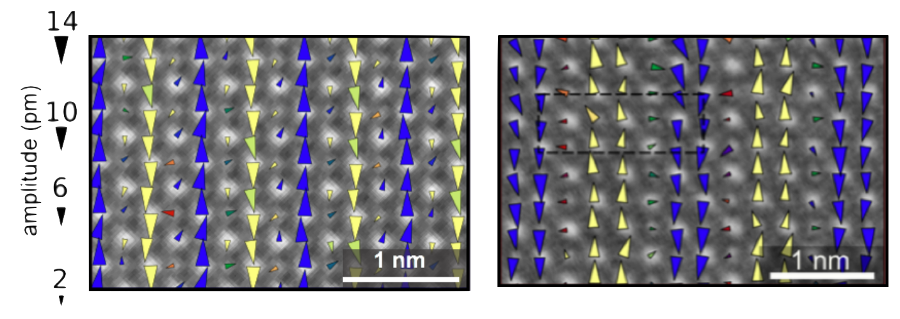

Atomic-scale windows into quantum phases
Strongly correlated electronic materials host a myriad of fascinating structural, electronic and magnetic ground states as well as complex behaviors ranging from the nanoscale coexistence of competing phases to a huge sensitivity to external stimuli.
Our laboratory utilizes in situ electron microscopy to visualize and manipulate these materials at the atomic scale.

Atomic-resolution cryo-STEM of low temperature trimers in a 2D material
How we look
The instrument at the heart of our research is the scanning transmission electron microscope (STEM) which provides vivid atomic-resolution images of crystalline materials. To access and manipulate the rich phases of strongly correlated materials, both ultra-stable cryogenic sample holders and in situ control knobs are essential.
The advent of high-resolution cryogenic STEM imaging near 90 K has enabled unprecedented microscopic insights, such as the direct visualization of the picometer scale distortions that accompany charge and orbital order, topological defects in stripes, and trimerization in a 2D material.

Picometer-scale atomic displacements in the charge order phase of manganites
Recently, we have developed a novel instrument that enables cooling using liquid helium. The low-vibration design enables atomic-resolution imaging and stable temperature performance. A broad range of electronic, optical and quantum phases are now accessible to electron microscopy.
What we study
Charge & Orbital Order
Direct visualization of symmetry-breaking states. Examples include real space observations of topological defects in charge-ordered stripes, and atomic-scale tracking of charge order dislocations across temperatures.
Superconductivity & Criticality
Studying the interplay between unconventional superconductivity, phase separation, ferroelectricity, and quantum criticality in complex oxides and quasi-2D compounds.
Collective Excitations
Probing momentum-resolved electronic and lattice excitations using 5 meV energy resolution monochromated EELS-STEM in correlated matter and low-dimensional systems.
In Situ Tuning
Applying electric fields and uniaxial strain inside the electron microscope to directly visualize domain evolution and coupling between order parameters and their conjugate fields.
Cryogenic Instrumentation
Development of novel cryogenic sample holders, including liquid helium stages, enabling sub-10 K electron microscopy with atomic resolution and millikelvin stability.
2D & van der Waals Materials
Exploring phenomena in quasi-2D and quasi-1D compounds including charge density wave order, trimerization, and spin-orbit torques in transition metal dichalcogenides.